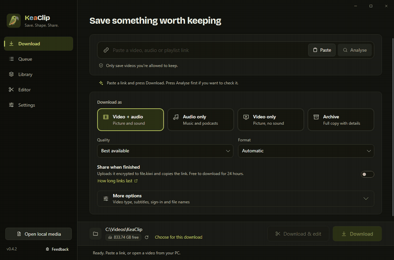
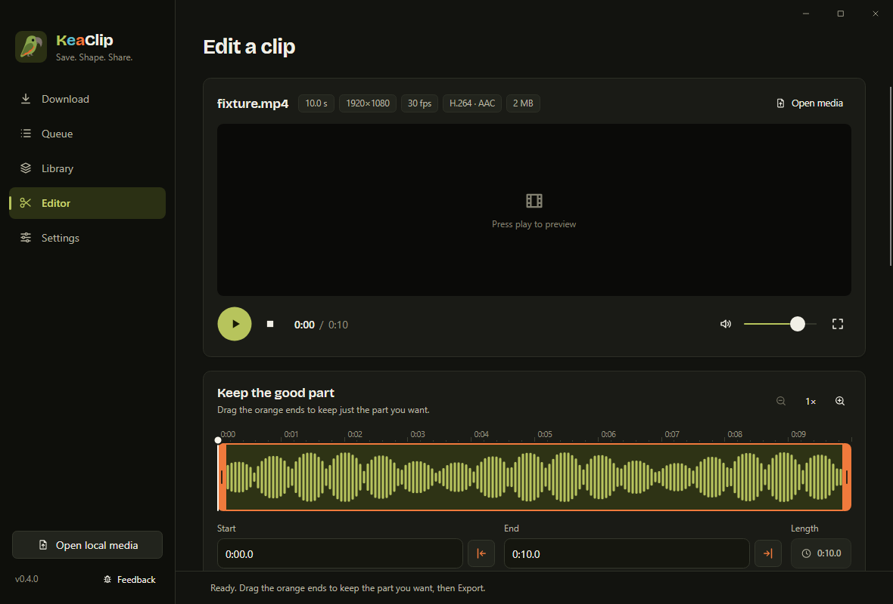

KeaClip is a free Windows app for video clips. Paste a link to save it, trim it to the part that matters, shrink it to fit Discord in one click, then paste it straight into the chat. Need to send something bigger? Drop any files or a whole folder on it for one private link.
Free · for Windows 11 · No ads, no account, no tracking

Everything happens on your PC. Your original file is kept unless you say otherwise.
Saw something worth sharing? Paste the link from Reddit, X, Twitch, YouTube or hundreds of other sites. Get the video, just the sound, or only the part you want.
Drag the orange ends to keep the good bit. Make it smaller, pull out the audio, or turn it into a GIF.
One click fits a clip under Discord's or email's limit. Press Copy clip and paste it straight into the chat, or send a private link that stops working after a day. Drop any files or a whole folder on KeaClip to send those too.
KeaClip spots new recordings from Xbox Game Bar, NVIDIA, AMD and OBS in your Videos folder, so your best moment is one click away.

Yes. No trial, no watermark, no ads, no account. It's open source under the GPL. If it helps you, you can leave a tip on Ko-fi, but you never have to.
That warning shows for new apps that aren't code-signed yet. Click More info, then Run anyway. The full source code is public, and every download comes with a checksum so you can check the file wasn't changed.
A few free helper tools that do the heavy lifting: yt-dlp (reads video links), FFmpeg (cuts and converts) and Deno (helps with some sites). They come straight from their official sites, once. Uninstalling KeaClip removes them again.
No. There's no tracking or analytics, and your files never leave your PC unless you share them. KeaClip only goes online to download what you paste, fetch and update its helper tools, check for a new KeaClip version (you can turn that off), and upload a file when you press Share.
Yes. Drag any files or a whole folder onto KeaClip (or copy them in File Explorer and press Ctrl+V in KeaClip). A card shows what's in it, and nothing uploads until you press Share. Several files or a folder are packed into one .zip for you, then shared with one encrypted link.
Links made with file.kiwi are free to download for 24 hours (12 hours for 10 to 20 GB, 6 hours above that). Details from file.kiwi.
Windows only for now.
KeaClip is made by one person in New Zealand and will stay free. If it saved you some time, a coffee on Ko-fi keeps it going.
Support KeaClip on Ko-fi